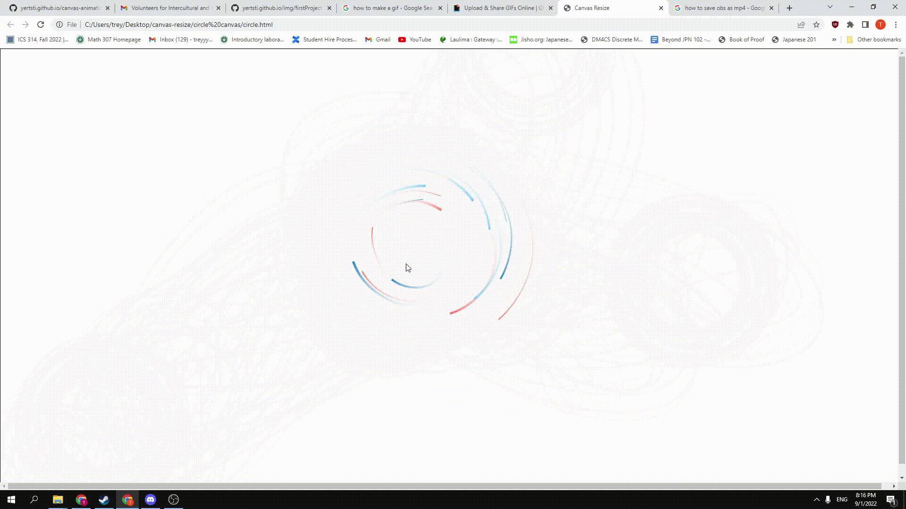

 This project utulizes canvas in HTML to create and display cool 2D graphics using JavaScript. This script draws colored circles that orbit around your mouse in the window. The functionality of this is non-existant, but it does look pretty cool. Because this was my first time creating anything more than a simple algorithm that prints to console, pretty much everything was derived from a tutorial from Youtube.
A majority of this project was creating the code to run the animation in JavaScript and a very small portion of it was creating the canvas in html to display the animation on the web page.
At the time when I completed this project, I thought it was the coolest thing in the world. I could tell you what each part did and how to change the variables to get the behavior you want. But, under the hood I had no idea what was going on. It was like being able to drive a car without knowing what was going on in the engine. For driving, this is fine, but for software development it becomes a bit of an issue. Esentially all I learned from this project was how to follow a tutorial.
With hindsight, if I were to re-create this project without the aid of a tutorial, I would have no chance of actually completeing it. I think this experience lead to the realization that just because I was able to do something, it does not necessarily mean that I actually understand how to do it. This was a good lesson to learn early one because programming in general has such good documentation and resources that the question you are trying to answer most likely has already been asked, but if you never really learn how to do it on your own, you will be looking things up more than programming.
Source: canvas animation